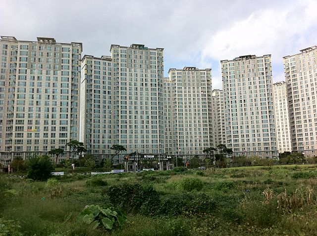

Here’s a fun little chapter. You’ll pick up lots of useful vocabulary (like a lot) here and get to learn how daily life functions for many Koreans. We’ll continue to try and break up the monotony of learning grammar by teaching vocabulary and teaching about life and culture in Korea.
Once you arrive in Korea it won’t be long before you get invited into someone’s home. While Koreans tend to play outside of their house, they do like to invite close friends or family over for meals. Here’s some vocabulary to get us started.
apartment
Korean-style house
modern-style house
Elevator
house (general)
door
entryway
shoes
shoe rack
floor
couch/sofa
Korean floor table
table (Western-style)
chair
This chapter is a little vocab-heavy but hang in there. When you are first invited into someone’s home in Korea, you’ll probably be given an address. A quick search on Google or Naver Maps (a domestic Google competitor) will reveal the location and what public transport you need to take to get there. There’s a very high chance that the first house in Korea you visit will be an 아파트 (apartment). Individual Korean-style homes, called 한옥, and Western-style homes, called 주택, do exist, they are just more expensive.
The word 아파트 comes from the English word “apartment”. As we discussed last chapter there is an ever-increasing number of English-import words in the Korean language (or at least the South-Korean language). This is no doubt due to the Western influence that Korea has received a lot of in recent centuries, and especially in recent decades. These words are convenient for English speakers learning Korean, but it’s important to pronounce these “Konglish” words in the Korean way. Be warned that occasionally the meaning of English words is also changed when they are used in Korean.


As I mentioned before, grammatical roles in English are not strictly defined like they are in Korean. Things happen behind the scenes, and we don’t have to think about whether the word we are using is acting as the topic or the subject (or both as the case may be) and can just speak it. In Korean however, it is necessary to put the correct marker on our nouns. This applies whether in speaking or writing. While this may seem cumbersome at first, you’ll soon see how Korean allows for succinct, fine-tuned control over the nuance of a sentence with the 은/는 and 이/가 particles.